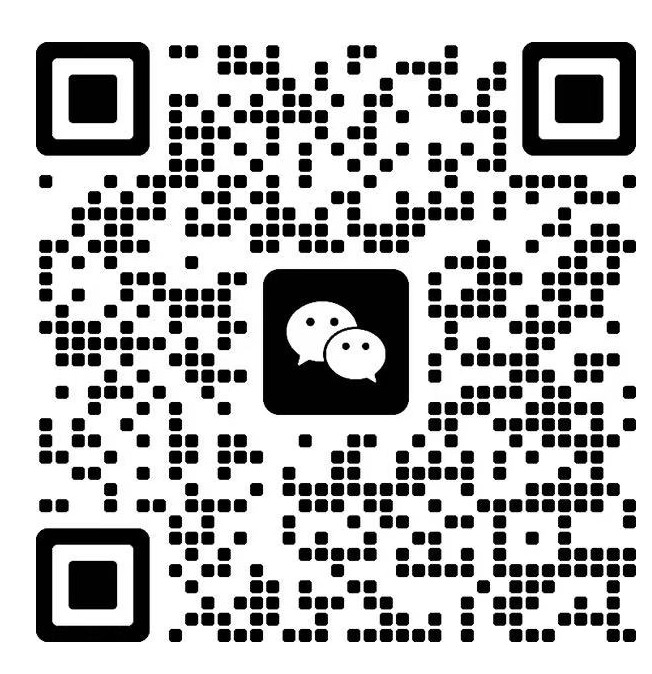
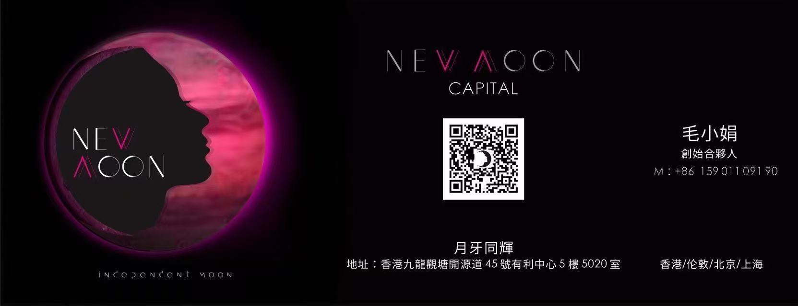

把家教的生产全流程，交给 AI
用 AI 自动化家教相关的生产：简历制作、学生能力圈档案、课程讲义资料、给家长的课后反馈，覆盖全流程链路。
毛小娟 · 月牙小姐
前线性资本副总裁 · OPC 一人公司实践者 · 青年创业导师
不聊空话，
把一个真问题，聊透。
给年轻创业者的 1 对 1 轻咨询，就聊你眼前正在经历的事。
约一次轻咨询01 · DATA
02 · PATH
二十年，在投资与产业一线看项目、连接产业；现在亲自跑一人公司。正因为两边都走过，更清楚年轻创业者起步时，常卡在方向、产品和取舍上。
投资人关系、商业化构建、市场营销、跨界战略合作
一线科技基金。负责产业生态建设与运营，为被投企业对接大客户（大健康 / AI / 零售 / 工业），主导与行业、政府的战略合作
亲自实践一人公司，创立月牙同辉（New Moon）；写公众号「月牙小姐」，顺德美食与数字游民博主
03 · CONSULTING
一次 1 对 1，只聊一件事：你眼前正在经历的那个问题。帮你把它理清楚一点，少走一点弯路。
只有三条规则
04 · NOTES
用 AI 自动化家教相关的生产：简历制作、学生能力圈档案、课程讲义资料、给家长的课后反馈，覆盖全流程链路。
从微信发出文字、语音、视频，自动存进个人知识库——解决「随时随地、随手记录」这件事。
05 · CONTACT
带上一个正在发生的真问题，扫码加我微信，约一次轻咨询。

WECHAT · 扫码加我微信
个人名片 · 扫下方二维码关注我的公众号
